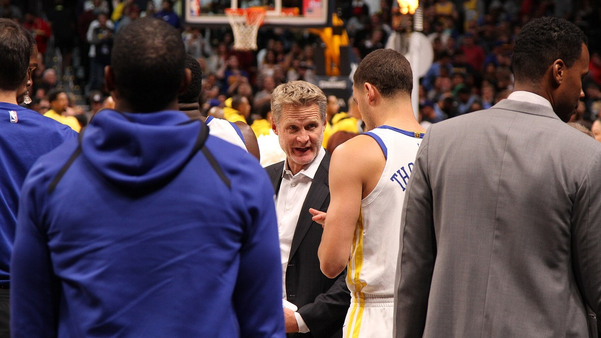

Warriors Injury Report
Who is out and who is day to day for Golden State, kept current through the season at this one address.

Check this page before a Warriors game. Every player on the league injury report is here with his position, the injury, his status and when it last changed. It refreshes several times a day, so the link never changes from one week to the next.
The current report
Updated Sat, Nov 14, 3:35 AM Pacific. 5 ruled out, 0 day to day or questionable. Next game: at New Orleans Pelicans, Mon, Nov 16, 5:00 PM Pacific.
| Player | Pos | Injury | Status | Expected back | Last update |
|---|---|---|---|---|---|
| Kristaps Porzingis | C | Illness | Out | About 7 weeks (est. Jan 2, 2027) | Fri, Nov 6 |
| Jimmy Butler III | F | Knee, surgery, right | Out | About 7 weeks (est. Jan 2, 2027) | Fri, Oct 16 |
| Brandon Williams | G | Hamstring, left | Out | 1 week (reported Nov 10) | Tue, Nov 10 |
| Moses Moody | G | Knee, surgery, left | Out | About 2 weeks (est. Dec 1) | Fri, Oct 16 |
| Stephen Curry | G | Abdomen, right | Out | Checked again in 2 weeks (reported Nov 12) | Thu, Nov 12 |
Quick answers
Who is out for the Warriors right now?
As of Sat, Nov 14: Stephen Curry (out), Brandon Williams (out), Kristaps Porzingis (out), Moses Moody (out) and Jimmy Butler III (out).
When is Stephen Curry expected back?
Checked again in 2 weeks (reported Nov 12). He is listed as out (abdomen, right), last updated Thu, Nov 12.
When is Brandon Williams expected back?
1 week (reported Nov 10). He is listed as out (hamstring, left), last updated Tue, Nov 10.
When is Kristaps Porzingis expected back?
About 7 weeks (est. Jan 2, 2027). He is listed as out (illness), last updated Fri, Nov 6.
When is Moses Moody expected back?
About 2 weeks (est. Dec 1). He is listed as out (knee, surgery, left), last updated Fri, Oct 16.
How to read it
Out means he will not play in the next game. Day to day means the injury is minor enough that the call gets made close to tip off, and on game day the league report turns that into questionable, doubtful or probable. The NBA has no injured reserve, so a long injury simply stays on the report as out.
Expected back is the latest timeline we can stand behind. When the update names one, like six weeks or two to three weeks, it shows here in plain numbers with the date it was reported. When it does not, you see the estimated return date carried on the league report, marked est. Timelines move, and this page moves with them. If nothing has been reported, it says no timeline yet. Practice participation is not shown: if the feed does not report it, we do not guess at it.
Where the numbers come from
Status and injury come from the league injury report as published through ESPN, read automatically. Nothing in the tables is typed in by hand. See our editorial standards and corrections policy.
For who plays when somebody sits, see the Warriors depth chart and our projected rotation. Every game and result is on the Warriors schedule page, and the long view of the roster is in the season outlook.
Every Bay Area injury report
Every Bay Area team · 49ers · Raiders · Giants · A's · Sharks